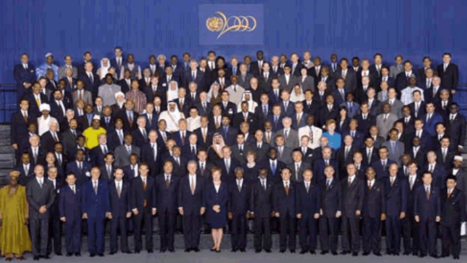

Historia de los ODS
Antecedentes: Los Objetivos de Desarrollo del Milenio (ODM)
La historia de los ODS comienza con los Objetivos de Desarrollo del Milenio (ODM), un conjunto de metas acordadas en el año 2000 durante la Cumbre del Milenio de las Naciones Unidas. En ese momento, los líderes mundiales identificaron problemas como la pobreza extrema, el hambre, el acceso a la educación, la igualdad de género y la salud, entre otros, como prioridades globales. Los ODM, que contaban con un plazo hasta 2015, marcaron la primera gran iniciativa para combatir los desafíos sociales y económicos más urgentes. Los avances fueron significativos, pero al acercarse la fecha límite, quedó claro que muchos de los problemas seguían sin resolverse completamente, y que otros, como el cambio climático, habían adquirido una mayor urgencia.
Aquí algunos datos curiosos y relevantes sobre su evolución:
A diferencia de los ODM, que fueron diseñados principalmente por un pequeño grupo de expertos. Al pasar el cursor verás más detalles.
Los ODS resultaron de uno de los procesos de consulta más inclusivos de la historia de la ONU. Participaron gobiernos, organizaciones de la sociedad civil, expertos y ciudadanos de todo el mundo, a través de encuestas, reuniones y consultas en línea.
Una diferencia clave entre los ODS y los ODM es que los ODS son universales. Explora más al pasar el cursor.
Lo que significa que se aplican tanto a países desarrollados como en desarrollo. No es solo un esfuerzo para erradicar la pobreza en las regiones más vulnerables, sino un llamado global para que todas las naciones adopten medidas hacia un desarrollo sostenible.
Los ODS están compuestos por 17 objetivos principales, pero para lograr cada uno de ellos hay un total de 169 metas específicas. Pasa el cursor para ver más.
Estas metas proporcionan un plan detallado para medir el progreso, cubriendo desde la igualdad de género hasta la acción climática, la educación de calidad y la justicia social.
La pandemia ha sido un obstáculo significativo para el progreso de los ODS. Descubre más detalles aquí.
Ya que ha exacerbado la pobreza y las desigualdades, y ha puesto a prueba los sistemas de salud y educación en todo el mundo. No obstante, también ha resaltado la importancia de los objetivos para construir sistemas más resilientes.
Nacimiento de los Objetivos de Desarrollo Sostenible: Un enfoque más holístico
Con el vencimiento de los ODM en 2015, se reconoció la necesidad de un enfoque más amplio y profundo para enfrentar los problemas mundiales.
En lugar de centrarse únicamente en el desarrollo social y económico, el mundo había tomado conciencia de la importancia de la sostenibilidad ambiental.
Esto llevó a la creación de los Objetivos de Desarrollo Sostenible (ODS), que fueron presentados en 2015 durante la Cumbre de Desarrollo Sostenible en Nueva York. Los ODS surgieron como una agenda universal para abordar problemas interconectados y complejos.
Se reconoció que la pobreza, la desigualdad y el cambio climático están intrínsecamente relacionados y que cualquier intento de resolver un solo problema sin considerar los otros sería insuficiente.
El proceso de creación de los ODS: Inclusión y consenso global
A diferencia de los ODM, que fueron elaborados principalmente por un pequeño grupo de expertos, los ODS se desarrollaron a través de un proceso más inclusivo y democrático. Las Naciones Unidas involucraron a gobiernos, ONG, académicos, y a la sociedad civil en la discusión, lo que permitió que las metas finales reflejaran una amplia gama de preocupaciones y aspiraciones globales. Este proceso culminó con la adopción de la Agenda 2030 para el Desarrollo Sostenible, que incluía 17 objetivos y 169 metas específicas. Los ODS abordan no solo los problemas tradicionales como la pobreza y el hambre, sino también cuestiones como la desigualdad, la justicia, la paz, y la degradación ambiental.
Selección de los ODS: Un equilibrio de prioridades globales
La elección de los 17 ODS no fue sencilla. Se intentó crear un equilibrio entre las prioridades de diferentes regiones del mundo. Las naciones en desarrollo, por ejemplo, abogaban por un enfoque en la erradicación de la pobreza y la mejora de la salud y educación, mientras que los países desarrollados ponían un énfasis mayor en temas como la sostenibilidad ambiental y el cambio climático. Los ODS reflejan esta diversidad de preocupaciones. Objetivos como el ODS 1 (Fin de la pobreza) y el ODS 2 (Hambre cero) son centrales para el desarrollo económico, mientras que otros como el ODS 13 (Acción por el clima) y el ODS 14 (Vida submarina) destacan la importancia de proteger el medio ambiente. Además, metas como el ODS 5 (Igualdad de género) y el ODS 10 (Reducción de las desigualdades) subrayan la necesidad de justicia social.
Podemos observar en la piramide de como se divide en tres niveles la importancia de los ODS.
Priorizando las ODS relacionados al cuidado del medio ambiente y la vida en ella.
Implementación y monitoreo: Hacia un futuro más sostenible
Una vez establecidos los ODS, la comunidad internacional se comprometió a implementarlos para 2030. La clave aquí es que, aunque se acordaron a nivel mundial, cada país tiene la responsabilidad de adaptarlos a sus realidades nacionales. Además, su naturaleza interconectada implica que muchos objetivos se refuercen mutuamente; por ejemplo, mejorar la educación (ODS 4) puede tener un impacto positivo en la salud (ODS 3) y la igualdad de género (ODS 5). El monitoreo del progreso hacia los ODS se realiza a través de indicadores medibles, y cada país es responsable de informar sus avances. Sin embargo, uno de los desafíos es asegurar que los países más vulnerables no se queden rezagados y que se dispongan de los recursos necesarios para implementar las metas en las regiones que más lo necesitan.
Impacto y desafíos futuros
A lo largo de los años, los ODS han servido como una brújula moral y práctica para muchas políticas y estrategias globales. Los avances en áreas como la salud y el acceso al agua potable han sido significativos, pero problemas como la crisis climática y las desigualdades siguen representando grandes desafíos. El COVID-19 también demostró lo vulnerables que son los avances hacia los ODS, revirtiendo algunos logros y exponiendo las debilidades de los sistemas globales de salud y economía.
Los Objetivos de Desarrollo Sostenible representan un esfuerzo ambicioso y necesario para enfrentar los desafíos más apremiantes del siglo XXI.
Un elemento crucial en la implementación de los ODS es la participación activa de todos los sectores, no solo los gobiernos. Las empresas, ONG y ciudadanos tienen un papel esencial que jugar. Muchas empresas están adoptando los ODS como una parte integral de sus estrategias de responsabilidad social y sostenibilidad. También, organizaciones de la sociedad civil están trabajando en alianzas para promover estos objetivos a nivel local y global.